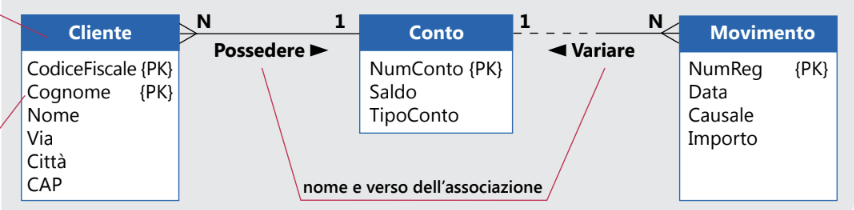
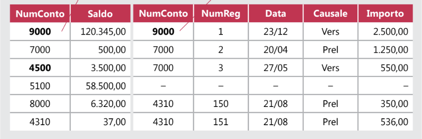

Modelizzazione
Con questo si intende la rappresentazione semplificata della realtà osservata e avviene a diversi livelli di astrazione:
- Modello Concettuale: rappresenta la realtà dei dati e la relazione tra essi.Tra i numerosi modelli proposti per la progettazione concettuale, il più noto è il modello
Entità/Associazioni detto anche modello E/R., le entità sono degli insiemi di oggetti astratti o concreti che hanno un significato per la realtà che sto rappresentando con il mio database

gli elementi di un modello E/R sono:
- entità: oggetto con significato anche quando viene considerato isolato, questo viene definito dal tipo di entità attraverso un nome
- assocazioni: è il legaeme che stabilisce un'interazione fra le entità
- attributi: sono le propietà delle entità e delle associazi e sono caratterizate dal suo formato(tipo di valori che assume), dimensione (quanti caratteri puo avere) , e l'opzionalità (se è null)
- Modello Logico/Relazionale: rappresenta il database come un insieme di tabelle. Esso viene considerato attualmente il modello più semplice ed efficace, perché è più vicino al modo consueto di pensare i dati, e si adatta in modo naturale alla classificazione e alla
strutturazione dei dati stessi.

- Modello Fisico: Il modello fisico rappresenta il database già assemblato, con tutte le tabelle, i campi e le relazioni; che lavora all'interno di un disco rigido del computer, e lì, appunto, opera fisicamente